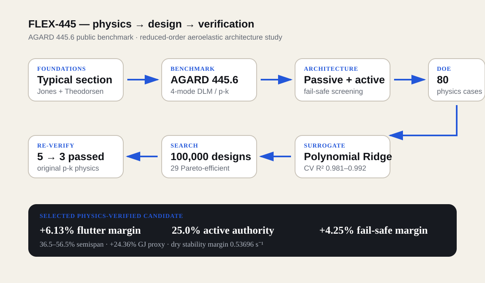
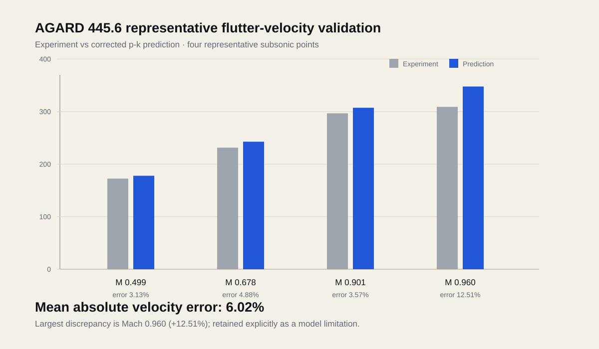
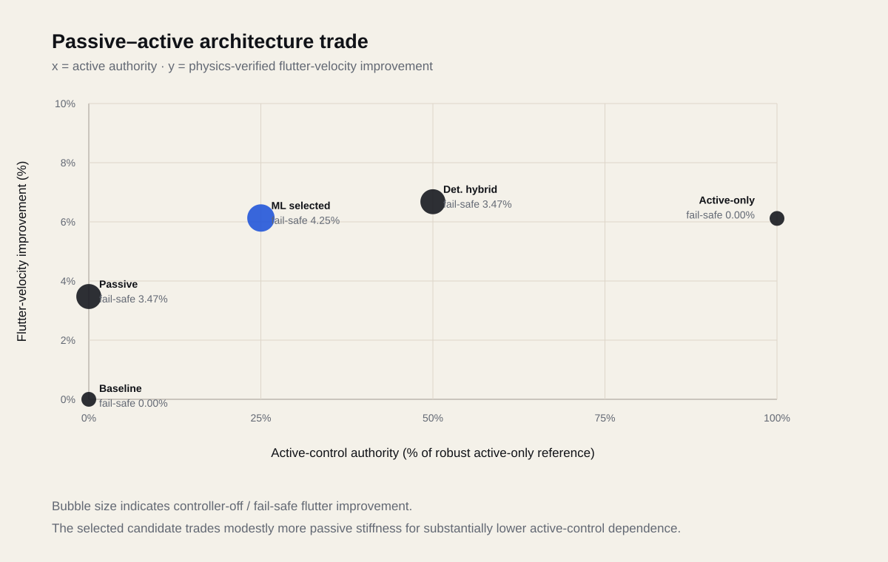

FLEX-445
Physics-Guided Hybrid Flutter Mitigation on the AGARD 445.6 Benchmark
A public-benchmark study of whether passive torsional tailoring and robust active control can share the burden of flutter-margin improvement. The work progresses from classical typical-section theory to a four-mode DLM/p-k benchmark, hybrid fail-safe architecture design, physics-generated ML surrogates, a 100,000-design search and final physics re-verification.

Validation before optimization.
The project was built in two notebooks. Notebook 01 verifies the aeroelastic building blocks using a 2-DOF plunge–pitch section. Notebook 02 moves to the public AGARD 445.6 weakened Model-3 benchmark and adds DLM aerodynamics, p-k flutter, passive and active design studies, DOE/ML screening, and physics re-verification.
Lower active dependence with retained fail-safe margin.
| Quantity | Selected physics-verified candidate |
|---|---|
| Reinforcement region | 36.5–56.5% semispan |
| Local torsional-stiffness proxy | +24.362% GJ |
| Notional added mass | 2.436% panel mass / 0.0454 kg |
| Active authority | 25.011% of robust active-only reference |
| Controller bandwidth / delay | 55.64 Hz / 6.33 ms |
| Hybrid flutter improvement | +6.131% |
| Controller-off improvement | +4.248% |
| Minimum dry stability margin | 0.53696 s⁻¹ |
Benchmark + architecture trade.
The final claims are deliberately separated from the model limitations.

Representative subsonic validation. The Mach 0.960 point is the largest discrepancy and is retained as an explicit limitation.

The selected candidate reduces active-control dependence compared with the deterministic 50% hybrid and active-only architectures while preserving controller-off margin.
ML was not allowed to make the final decision.
The 80-case physics DOE trained three independent Polynomial Ridge surrogates with cross-validated R² values of approximately 0.981–0.992. The surrogates screened 100,000 architectures and identified 29 Pareto-efficient feasible designs.
Five candidates were returned to the original solver. One failed the controller-off margin requirement and one missed the hybrid-improvement requirement. Only three were retained. That failed-shortlist evidence is part of the project because it shows why surrogate predictions were treated as screening tools rather than truth.
The selected candidate was not the maximum-flutter-gain design. It was chosen from the fully verified set for minimum active authority.
Concept integration, not decorative CAD.
The NX model maps the AGARD planform/airfoil geometry, the nominal mid-span reinforcement region and a separate internal actuator packaging envelope. It demonstrates how the analysis result can be translated into a physical design concept without pretending that the CAD itself proves stiffness or actuator performance.
The deterministic NX reinforcement region was built around 35–55% semispan. The final ML-selected architecture later shifted the optimum slightly to 36.5–56.5%; the CAD is therefore presented as a concept-level implementation study, not a final manufacturing definition.
What FLEX-445 does not prove.
The model does not establish flight certification, OEM flutter clearance, nonlinear transonic aerodynamics, detailed composite/metal structural sizing, fatigue/damage tolerance, actuator power/thermal/reliability qualification, sensor redundancy or production-ready hardware. The passive GJ–mass relationship is a notional architecture-study proxy.
The project is strongest as a transparent engineering workflow: public benchmark → reduced-order validation → passive/active trade → robustness checks → ML screening → return to physics → concept-level CAD mapping.
Source provenance: AGARD 445.6 numerical data are attributed to E. Carson Yates Jr., NASA TM-100492. The NTRS record lists the document as public and “Work of the US Gov. Public Use Permitted.” DLM calculations use the open-source DLR PanelAero package under its upstream BSD 3-Clause license. Full references and third-party notices are included with the project files.